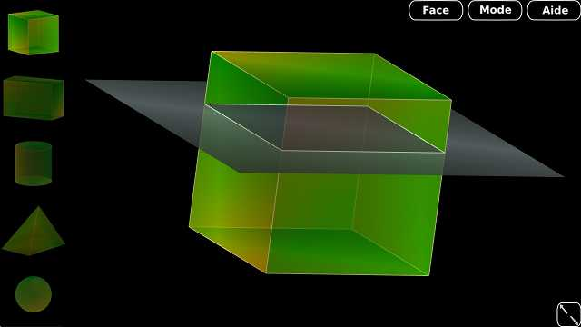
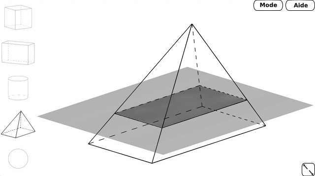

Sections est un petit outil simple pour la visualisation des sections de solides dans l'espace.
Voir le projet sur GitHub LeGBT/Sections

Sections permet de rapidement visualiser les différentes sections des solides étudiés au collège.
C'est un logiciel libre et fonctionnant sur n'importe quel système d'exploitation supportant Java.
Pour en télécharger un exécutable, il suffit de cliquer sur l'onglet « Télécharger Le Logiciel », de dézipper celui-ci et enfin de lancer Section.jar.
Si cela ne fonctionne pas c'est sans doute que vous n'avez pas java d'installé, vous pouvez par exemple le trouver ici.
Deux modes de vue sont disponibles : un mode « classique » avec un rendu en transparence et un mode fil de fer.

Si vous préférez récupérer les sources pour par exemple modifier quelque chose qui ne vous plait pas, la solution la plus simple est de cloner le projet grâce à la commande
$ git clone git://github.com/LeGBT/Sections.git.jar de jogl et glugen et les ajouter au dossier Sections/lib/. Il faut aussi ajouter à ce dossier lib le jar de junit 4.10.
Il faut ensuite compiler le projet et le lancer avec :
$ cd Sections
$ ant compile
$ ant run
Si vous avez la moindre question, vous pouvez les poser sur le suivi de problèmes de GitHub ou bien sur ma boite mail académique (académie de Grenoble).